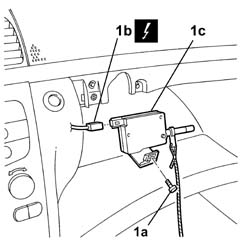

7040A42 Motor for opening/closing glove compartment flap in dashboard - R.R.
- Path
- Procedures > 70 FITTINGS > 7040 BODY INTERIOR UPHOLSTERY AND TRIM > 7040A PASSENGER COMPARTMENT TRIMS > 7040A42 Motor for opening/closing glove compartment flap in dashboard - R.R.
- Kind
- repair procedure (removal / refitting; the operation number is the code)
- Applies to
- all engines; all production periods
- Interactive page
- https://sloeber94.github.io/elrnDB-lThss/en/#/126599
Applies to: all engines; all production periods
- Open the boot, remove the cover on the left hand side and disconnect the negative battery lead.
See in Op. 7040A42 Motor for opening/closing glove compartment flap in dashboard - R.R.
1. Undo the fixing bolt (1a), disconnect the electrical connection (1b) and remove the motor (1c).
 | Description | Connector |
|---|---|---|
1b | Glove compartment motor | N027A |

Applies to: all engines; all production periods
- Connect the electrical connection for the motor.
| Description | Connector |
|---|---|---|
1b | Glove compartment motor | N027B |
- Place the motor in the correct housing.
- Tighten the fixing bolt.
See in Op. 7040A31 Compartment in dashboard - R.R.
- Connect the negative battery terminal and position the cover.